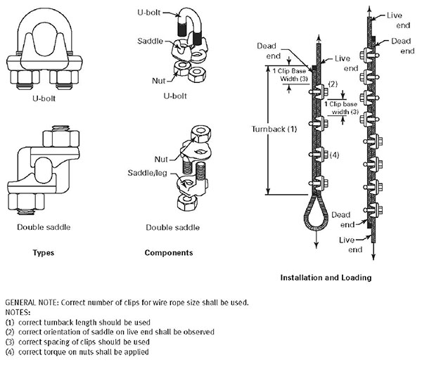
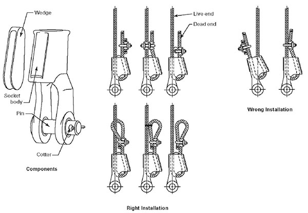

15.D Slings
15.D.01–15.D.02
15.D.01 General. This section applies to slings used in conjunction with load handling equipment (LHE) for hoisting and horizontally moving loads. All slings shall be manufactured, used, inspected and maintained according to ASME B30.9.
- Inspections.
- Slings, all fastenings and attachments shall be visually inspected by a CP each day or shift when in use.
- Annual inspections shall be performed by a CP and must be documented. Documentation must be available on site and available to the GDA upon request.
- Additional inspections shall be performed during sling use, where service conditions warrant. Damaged or defective slings shall be immediately removed from service.
- Rigging practices.
- All slings shall be hitched in a manner providing control of the load;
- Softeners. Sharp edges in contact with slings shall be padded with material of sufficient strength to protect the sling;
- Slings shall be shortened or adjusted only by methods approved by the sling manufacturer or a qualified person;
- The use of slings will be such that the entire load is positively secured;
- In a basket hitch, the load shall be balanced to prevent slippage;
- When using a basket hitch, legs of the sling shall contain or support the load from the sides, above the center of gravity, so that the load remains under control;
- In a choker hitch, the choke point shall only be on the sling body, never on a splice or fitting;
- In a choker hitch, an angle of choke less than 120 degrees shall not be used without reducing the rated load;
- Slings shall not be constricted, bunched, or pinched by the load, hook or any fitting;
- The load applied to the hook shall be centered in the base (bowl) of the hook to prevent point loading on the hook, unless the hook is designed for point loading;
- An object in the eye of a sling is not wider than one-third the length of the eye;
- The load shall not be landed on the sling;
- A sling shall not be pulled from under the load when load is resting on the sling;
- Slings shall not be dragged over abrasive surfaces;
- Shock loading is not allowed;
- Slings shall not be twisted or kinked.
- All slings shall be manufactured under ASME B30.9 guidelines and must have an affixed durable permanent identification tag that includes the following as a minimum:
- Name or trademark of the manufacturer (country identification only is not acceptable);
- Type of material used (synthetic web slings, synthetic round slings or synthetic rope slings only);
- WLL for a given type of hitch and configuration;
- Number of legs if more than one.
- Natural fiber rope shall not be used to fabricate slings.
- Fabricated eye slings or endless loop slings using alloy steel wire rope clips or clamps for hoisting material or lifting are prohibited except where the application precludes the use of prefabricated slings. All slings fabricated using alloy steel wire rope clips or clamps shall be designed by a RPE for the specific application. > See Figures 15-1 and 15-2.
FIGURE 15-1
Wire Rope Clip Spacing

FIGURE 15-2
Wire Rope Clip Orientation

15.D.02 Alloy Steel Chain Slings.
- Only alloy chain Grade 80 or higher shall be used in rigging.
- Chain shall be visually inspected each day or shift when in use. Inspect chains on an individual link basis. Chains shall be cleaned before they are inspected, as dirt and grease can hide nicks and cracks.
- Chains shall be removed from service if the following conditions exist:
- missing or illegible sling identification;
- cracks or breaks;
- excessive wear, nicks, or gouges. Minimum thickness of chain links shall not be below the values listed in Table 15-1;
- stretched chain links or components;
- bent, twisted, or deformed chain links or components;
- evidence of heat damage or weld splatter;
- excessive pitting or corrosion;
- lack of ability of chain or components to hinge (articulate) freely;
- other conditions including visible damage that cause doubt as to the continued use of the chain.
- When used with multiple leg slings, alloy steel chains, hooks, rings, oblong links, pear-shaped links, welded or mechanical coupling links, or other attachments shall have a WLL at least equal to that of the assembly chain.
- Multiple leg slings shall have the number of legs and lengths identified on the tag. > See Section 15.D.01.c.
{kind=link}
{kind=link}